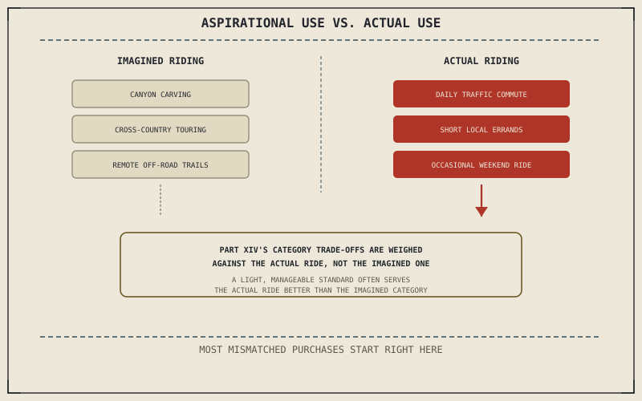

Chapter 14.9 closed Part XIV with a single conclusion: "which motorcycle is best" only becomes answerable once it's asked about a specific rider's actual problem. This chapter is where that problem finally gets named honestly, and the honesty matters more here than almost anywhere else in this book, because the gap between the riding a person imagines doing and the riding they will actually do is where most bad motorcycle purchases actually happen.
Chapter 14.9 closed by pointing here: choosing by actual use, before ergonomics, cost, or anything else this part covers. This chapter opens with exactly that.
Aspirational Use Versus Actual Use
It's easy to shop for the riding a person imagines doing — weekend canyon carving, a cross-country tour, genuine off-road trails — rather than the riding they will actually do most days, which for most riders is a commute, short errands, and the occasional weekend ride closer to home. Chapter 14.2's sportbike and Chapter 14.6's dirt bike each carry real, specific costs — wrist strain over distance, no road legality at all — that make excellent sense against the use case they were engineered for and very little sense against a daily commute those categories were never built to serve well.
Counting the Actual Ride: Frequency, Distance, Conditions
A specific, honest accounting does more useful work here than a vague sense of what kind of rider someone wants to be: how often the bike will actually be ridden, how far a typical ride actually covers, and what conditions it actually happens in — daily traffic, occasional highway distance, real off-road trails, or some specific mixture of them. That accounting maps directly onto Part XIV's categories: heavy daily traffic riding favors a lighter, more manageable machine over Chapter 14.4's loaded touring rig, while genuine, regular off-road riding justifies costs Chapter 14.6's dirt bike accepts that an occasional gravel road never would.
The gap between the riding a person imagines doing and the riding they will actually do is where most mismatched motorcycle purchases happen — and Part XIV's trade-offs only make sense once they're weighed against the second one, not the first.

A diagram contrasting aspirational riding — imagined canyon carving, cross-country touring, off-road trails — against actual riding patterns of frequency, distance, and conditions, with Part XIV's categories matched against the honest accounting rather than the imagined one.
A Common Misconception, Cleared Up Early
It's a common assumption that buying the more capable or more aspirational machine will motivate more of the riding it was built for, growing into the bike over time. In practice, a motorcycle mismatched to actual use more often discourages riding than it motivates growth toward it — the same instinct Chapter 13.8 already warned against, compounding modifications onto a bike of the wrong category rather than admitting the category itself was the mismatch.
Where This Leads
Actual use narrows the category. Chapter 15.2 turns to a second, equally concrete filter within that category: whether a specific motorcycle actually fits the rider physically.
Key Concepts to Remember
- Aspirational riding and actual riding are frequently different things, and Part XIV's category trade-offs should be weighed against the actual one.
- Honestly counting riding frequency, distance, and conditions maps directly onto which category actually serves that use best.
- A motorcycle mismatched to actual use more often discourages riding than motivates growth into the use case it was built for.
Cross-References
| ← Ch. 14.9 | Established that "which motorcycle is best" needs a specific problem to be answerable; this chapter provides the honest accounting that names that problem. |
| ← Ch. 14.2 | Established a sportbike's real ergonomic cost over distance; this chapter treats that cost as sensible against its actual use case and not against a mismatched one. |
| ← Ch. 13.8 | Warned against compounding modifications onto the wrong category of motorcycle; this chapter applies the same warning to the initial choice of category itself. |
| → Ch. 15.2 | Covers ergonomic fit — sitting on a motorcycle before buying it. |